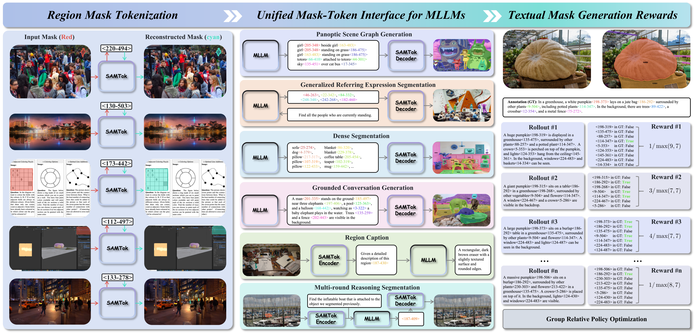

Contributions
We propose SAMTok, a discrete mask tokenizer that can tokenize masks into textual special words and detokenize the textual special words into masks, which can transform masks into a new language for MLLMs to learn like regular text data. As shown in Figure 1, our proposed SAMTok can convert diverse masks into textual special tokens and accurately reconstruct the corresponding masks. Through SAMTok, any MLLM can acquire powerful pixel-wise capabilities by learning like language data through supervised fine-tuning and reinforcement learning, without any additional architectural modifications or specialized loss design.
In summary, our contributions are three-fold:
- We propose a novel paradigm for MLLMs to model masks as a new language, enabling them to learn mask understanding and generation capabilities just like natural language without requiring architecture modifications or additional loss design.
- We propose SAMTok, which can accurately achieve bidirectional conversion between masks and textual special tokens. Based on SAMTok, the QwenVL series of MLLMs acquire strong pixel-wise capabilities through next token prediction loss, achieving SOTA performance across dozens of diverse benchmarks.
- =We design a textual answer-matching reward function that enables MLLMs to perform reinforcement learning on mask generation tasks similar to natural language data, demonstrating significant performance improvements.
SAMTok

SAMTok has a encoder $f_{\text{enc}}$, a vector quantizer with codebook $\mathcal{C}$, and a decoder $f_{\text{dec}}$. Both $f_{\text{enc}}$ and $f_{\text{dec}}$ are instantiated with a SAM model, which includes an image backbone $f_{\text{img}}$, a prompt encoder $f_{\text{prm}}$, and a mask decoder $f_{\text{msk}}$. Given an input image $\mathcal{I}$ and a region $\mathcal{M}$ (e.g., the area outlined in purple), the SAMTok encoder $f_{\text{enc}}$ first encodes the 2D mask into a mask embedding $\mathbf{z}$, then performs two-stage quantization to obtain a discrete mask embeddings $[\mathbf{e}_1, \mathbf{e}_2]$. The SAMTok decoder $f_{\text{dec}}$ reconstructs the 2D mask $\hat{\mathcal{M}}$ from the original image and the region`s discrete mask embeddings.

For the mask understanding task, SAMTok first tokenizes region masks into quantization codes, then formats them into mask words, which are used in the MLLM prompt to refer to the corresponding image regions. For the mask generation task, the MLLM first produces mask words according to the instruction, then maps these mask words to quantization codes, after which SAMTok reconstructs the 2D masks.
Experiments


Visualizations

SFT vs. RL. Examples are sampled from the GRES benchmark. RL finds more target objects, localizes relative positions better, and produces cleaner masks than SFT across diverse scenes.

Region mask reconstruction examples. For each region, the ground-truth mask is tokenized into two discrete codes, and SAMTok reconstructs the mask solely from the original image and the quantized mask tokens. SAMTok preserves fine structures for small, thin, or irregular objects even under challenging lighting or clutter. Since SAMTok is fully decoupled from the MLLM, its reconstruction quality remains stable regardless of downstream model training—unlike joint-training mask tokenizers that tend to collapse to elliptical or blurred masks.

Panoptic scene graph generation(PSG) examples. The model predicts subject-relation-object triplets where both subject and object categories are paired with their corresponding segmentation masks, represented through mask tokens. SAMTok’s interface allows the MLLM to generate consistent object masks and relational descriptions simultaneously, demonstrating strong alignment between textual predicates and pixel-grounded regions.

GRES examples. Given a natural-language referring expression, the MLLM outputs two mask tokens that decode into the final segmentation mask. SAMTok enables precise grounding for expressions involving fine attributes, part-level targets, or contextual reasoning. The examples show robustness to ambiguous descriptions, occlusion, and multi-object scenes.

Region Caption examples. Each visualization shows a region mask input (tokenized as two mask tokens) and the model’s generated description. SAMTok provides unambiguous spatial grounding, enabling the MLLM to generate accurate and context-aware region descriptions about attributes, roles, and interactions.

GCG examples. The model simultaneously describes the scene and produces region masks for phrases mentioned in the caption. For each highlighted phrase, SAMTok decodes the predicted mask tokens into segmentation masks. SAMTok’s compact representation (two tokens per mask) enables efficient, aligned text–mask generation with consistent grounding across multiple phrases within long captions.
Citation
@inproceedings{liu2025unipixel,
title={UniPixel: Unified Object Referring and Segmentation for Pixel-Level Visual Reasoning},
author={Liu, Ye and Ma, Zongyang and Pu, Junfu and Qi, Zhongang and Wu, Yang and Ying, Shan and Chen, Chang Wen},
booktitle={Advances in Neural Information Processing Systems (NeurIPS)},
year={2025}
}